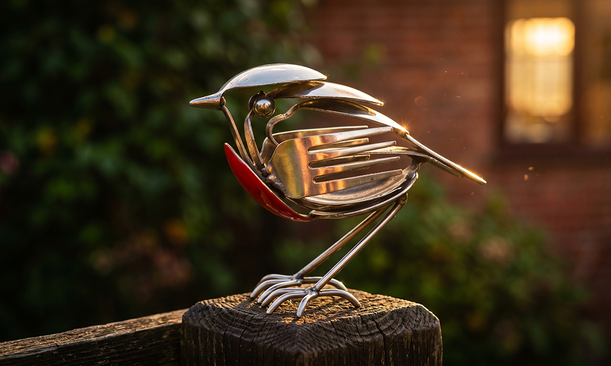
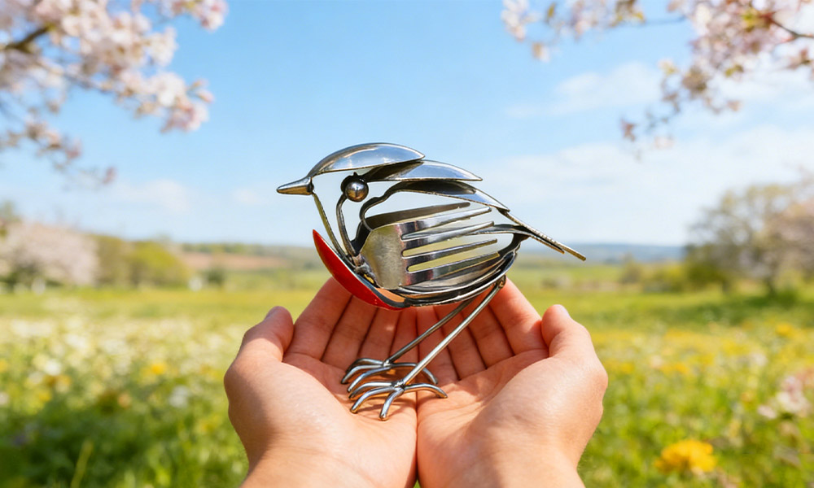
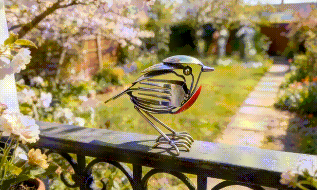
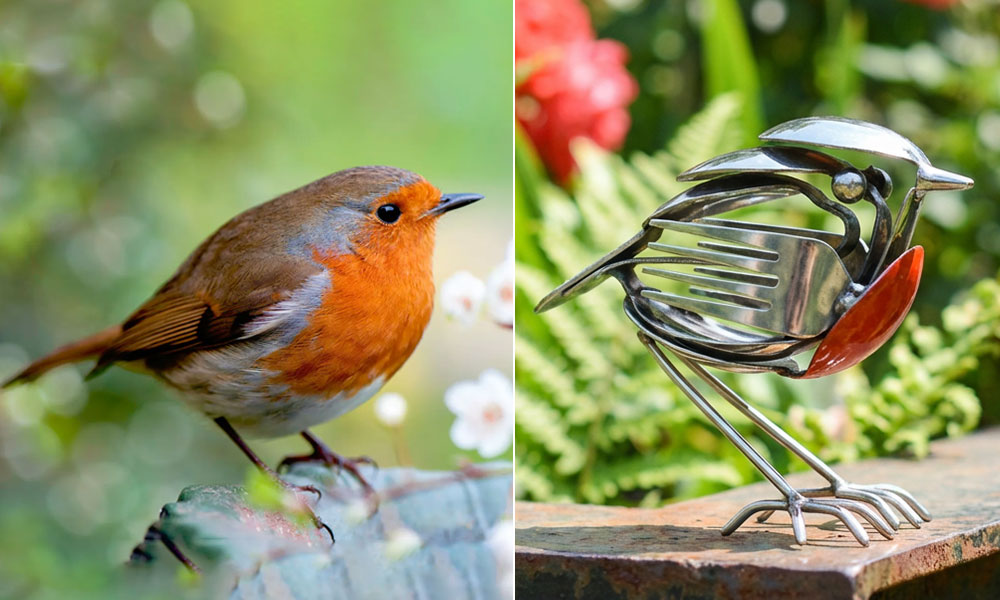
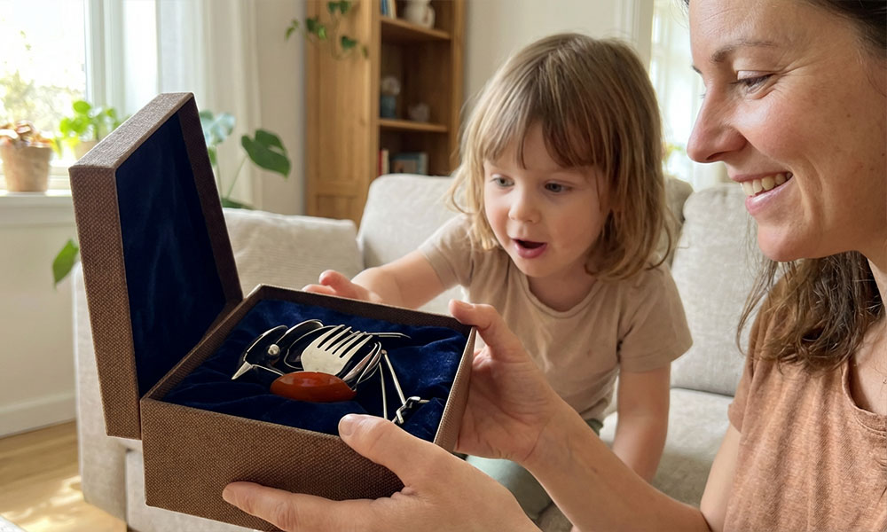
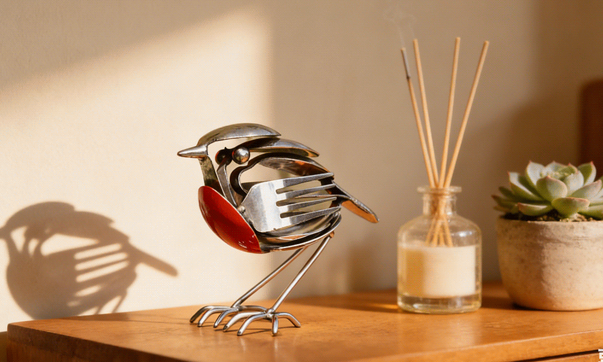
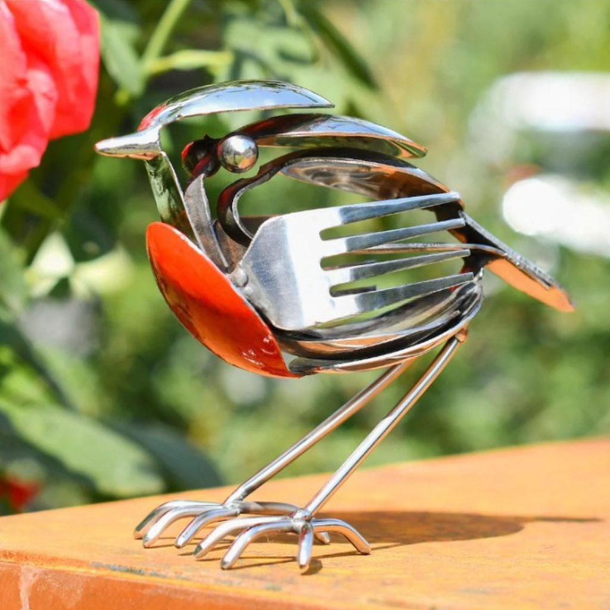
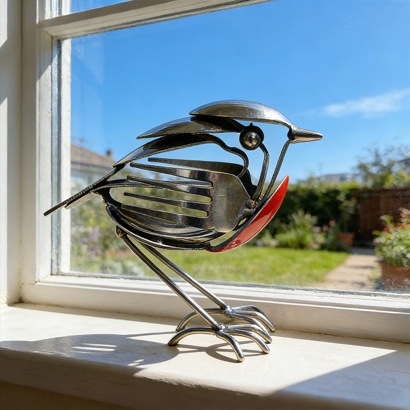
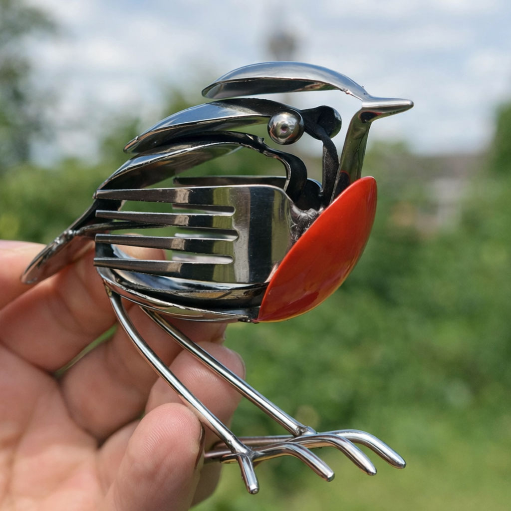
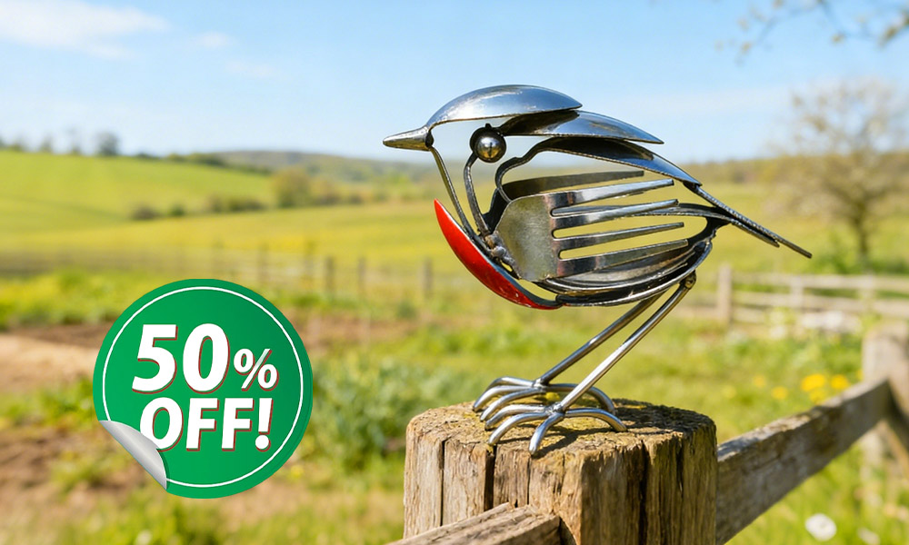

Why Everyone on My Street Stops to Look at This Metal Bird on My Porch

At my age, my garden is my sanctuary.
I've spent years curating the perfect flower beds, the most comfortable porch chairs, and a collection of decor that reflects my taste.
But let's be honest: after a while, every garden center starts looking the same. You see the same plastic gnomes, the same resin stones, and the same mass-produced wind chimes.
I was looking for something different. Something with soul.
The Shimmering Metal Robin That Changed Everything
When my daughter sent me a package from Seattle for my birthday, I expected something lovely—but I wasn't prepared for what was inside.
It was a robin - called Bloop™ HopeWings.

The moment I lifted it out of the box, the first thing that struck me was the weight. It felt substantial—solid, cool metal.
The shimmering, handcrafted feathers, the poised stance, and that gentle, alert gaze perfectly captured the spirited soul of a real Robin.
It was the most exquisite piece of metal artistry I had ever seen.
Even without direct sunlight, its metallic finish seemed to glow with a quiet, resilient energy.
I placed it on the corner post of my front porch railing, and within 48 hours, my morning routine had completely changed. I'm no longer just sipping my coffee in peace; I'm answering questions!
Last Friday, the mailman actually stopped his truck. He leaned out the window, squinting to get a better look at it in the sun.
"Mrs. Watson, I've been walking this route for ten years, and I've never seen anything like that bird. Is it a custom commission?"

That's the magic of this Robin. It doesn't look like "decor"—it looks like a collector's item.
It has that rustic, sophisticated charm that makes people think you discovered a hidden gem at an artisan market in Vermont.
My favorite moment is right around 5:00 PM—the "Golden Hour."
As the sun starts to dip, the metallic wings of this Robin seem to catch fire (that photo I took at the top of the page doesn't even do it justice—it was truly breathtaking).
It grabs that last bit of afternoon light and glows with a warmth that makes my whole porch feel a little more high-end, a little more "alive."
While the real birds head for their nests as the air cools, my little messenger stays put, shimmering with a golden energy that makes me smile every time I glance out the window.
It's a lovely reminder that even at my age, I can still be surprised by something beautiful.
It's not just a gift anymore; it's a tiny, gleaming masterpiece that makes me proud of my home every time a neighbor strolls by.
Meet the Bloop™ HopeWings — A Symbol of Resilience and Renewal

The Bloop™ HopeWings is more than a decoration—it's a permanent piece of "Spring" designed to brighten your spirit every single day.
🌞 A Symbol of New Beginnings: With its lifelike pose and spirited energy, this Robin serves as a daily reminder that you, too, can begin again.
🌿 A Touch of Nature's Magic: Hand-finished to capture the rustic beauty of the woods, it brings a sense of peace and "outdoor zen" to any room or garden.
❤️ The Ultimate "Thinking of You" Gift: It carries a deep, emotional meaning that flowers or cards simply can't match. It's a silent hug for anyone going through a hard time.

Crafted for a Lifetime of Hope
Unlike fragile glass or cheap plastic, the Bloop™ HopeWings is made from high-quality, weather-resistant metal.
Whether it's standing guard on your garden porch or your sunny mantle, this little Robin is a permanent piece of "Spring" that won't fly away—bringing a daily dose of hope and a gentle smile to your heart through every season of life.

Check Availability at the Artisan's Official Gallery →Hear From Others Who Found Their "Ray of Hope"

"I place my HopeWings in my garden, and wow—it catches the morning light beautifully! It adds a peaceful charm to my space. Every guest notices it and asks where I got it. It's not just a decoration; it's a tiny reminder to breathe and stay positive. Totally in love with it!"

"Lately, I've been feeling a bit down, but this little bird really lifts my mood. It's calming, gentle, and kind of magical. Just seeing it each morning reminds me that better days always come. It's high-quality, sturdy, and looks even better in person than in the photos."

"I bought this Robin as a gift for my sister who was going through a tough time, and she absolutely loved it! She said it made her cry—happy tears! It's meaningful, elegant, and feels like a warm hug sent through the mail. Highly recommend for gifting."
Spreading the Light
Moved by how much this little bird helped me, I decided to share this hope with two other women in my life who were struggling—one to a friend navigating a difficult divorce, and another to my sister who was feeling the weight of loneliness.
The reactions were heart-wrenching in the best way.
💬 "I just opened it and... I'm actually crying. It's exactly what I needed to see today."
💬 "It's the first thing I look at when I wake up now. It's like having a little piece of Spring right there."
Isn't it amazing how a small token of hope can spark something so big?
Instead of staring at dull walls or feeling weighed down by the world, these Robins remind us that joy is always within reach.
Sometimes, we just need a little messenger to point the way.
Claim Your 50% Savings Before They're Gone
Right now, the Bloop™ HopeWings is available at an exclusive 50% discount to help more people bring "Spring" into their homes.

Why People Love Their Robin:
✅ Instantly Lifts Mood: A cheerful, soulful presence in any room.
✅ Hand-Finished Artistry: Each bird has its own unique, rustic character.
✅ Perfect for Any Space: Looks stunning on windowsills, bookshelves, or tucked into a potted plant.
"Spring doesn't wait, and neither should you."
Get Your Messenger of Hope at 50% OFF!Join 10,000+ happy homeowners who found their "Spring" this year.